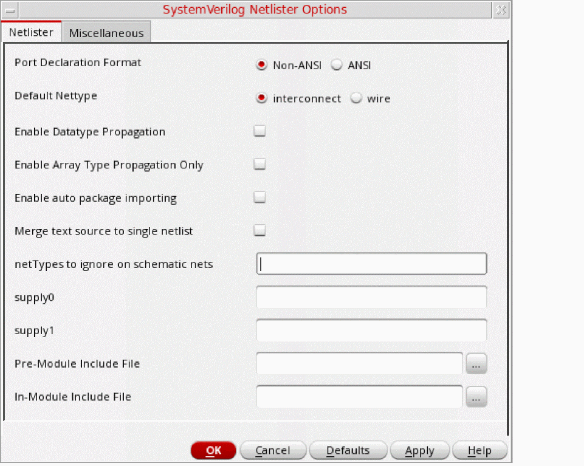

Configuring Netlist Generation Options
Before you generate the netlist of a design, ensure that you configure the netlist generation options, as required. SystemVerilog Netlister generates the netlist based on how you configure these options. By default, the netlist file is stored in the <projectDir>/<lib>_<cell>_<view>/netlist/ directory. For example:
projectDir/lib_cell_view/netlist/netlist.sv
To configure netlist generation options, based on which the SystemVerilog Netlister generates a netlist:
- Launch SystemVerilog Netlister.
-
In the Settings group box, click Open Option Form to set additional options.
The SystemVerilog Netlister Options Form appears with the Netlister tab selected.
 -
In the Netlister and Miscellaneous tabs of the SystemVerilog Netlister Options form, specify the required values or options and click OK.
For Verilog cellviews, specify the values or options on the Verilog tab of the SystemVerilog Netlister Options form.
The SystemVerilog Netlister options are successfully configured.
Related Topics
SystemVerilog Netlister Graphical User Interface
Generating and Regenerating a Netlist
Return to top